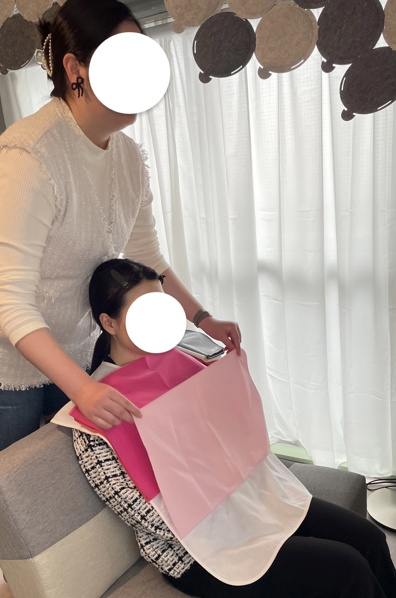

春休み 2024.2.1 ~ 3.31
★インターンに参加した理由
経営学部に通っているが、なかなか学んだ内容をアウトプットする機会がないと感じていた。
そこに友人がYOXOが主催するインターンシップに参加し、おすすめされたため。
また、3年生になると長期のインターンシップには参加しにくくなるのではないか、今期が最後だ、と思ったため。
★インターンの内容
インターンシップでは、主にIqilu株式会社が行なっているFukumikkeの活動に参加
（※Fukumikkeは消費者が似合う服を選び着ることで、アパレルの過剰在庫の削減と服の大量廃棄問題を解決しようとするサービス）
その中で”似合う”を見つけ、体感し、ポップアップイベントを開催することでFukumikkeの認知を拡大していく内容をメインの業務として行った。
→骨格診断・パーソナルカラー診断のイベントを企画から4Pの設定、集客、販促物の製作を行った。
★イベント開催の苦労、困難、得られたもの
- ターゲットの設定と開催場所
今回のイベントのターゲットは最初の段階で「新大学生」とかなり狭い範囲に設定した。
理由として、主に2つあり、1つはFukumikkeは”似合う”を見つける手伝いをすることから、新しく大学生になり、
高校の制服から私服になるこのタイミングで、似合う服が見つかれば楽しくオシャレをして大学生活がよりいいものにしてほしいという思いがあったため。
もう1つは、大学生は基本的に高価な洋服ではなく、安価なファストファッションの洋服を着ることが多く、服の大量廃棄の問題に意識が向けば、
とても大きな効果があるのではないか、そして、大学生になるタイミングで、この意識を持ってもらうことは非常に良いことだと考えたため。
→ただ、ターゲットがかなり狭いため集客が難しく、結果的に「大学生」全体に変更した。
また狭いターゲットを設定したことで、場所の設定が限定的になり、ギリギリまで決定しなかった。←これは集客に大きな影響があった。
- 値段の設定
値段設定の際、リサーチすると骨格診断とパーソナルカラー診断の相場は、サロンでは大体1万5000〜3万円、イベントでは3000〜5000円という結果になった。
ここから販促物やチラシ、診断結果のパンフレットの製作費、人件費などを考慮し、3500円に決まった。
しかし、新大学生は何かとお金が必要な時期でよほど興味がないと払わないのではないか？というのもあり、集客が難しいことになった。
- 集客
上の二つでも書いたように、途中でターゲットが変更になったり、開催場所の決定が遅れたり、値段設定がターゲットに一致していなかったりと問題が多く、
集客はなかなかうまくいかず、想定の1/5の人数しか集まらなかった。
- 得られたもの
大学で経営学について学んでいるが、経営に限らずイベントの開催も経営(マーケティング)の思考が必要になるということ。
インターンに参加して、初日でいきなり”4P”やターゲットについて考えるところから始まり、大学で学んだことをフル活用することができた。
そのため、改めて4Pやターゲットの設定の重要性や、特に4Pの中で”何を最初に決めるか”というのは非常に重要性が高く、
これによってその後の動きが決まってくるのだと強く感じた。
イベントの様子


[Iqilu株式会社について]
骨格・パーソナルカラー診断で“似合う”を可視化するアプリで「アパレルの過剰在庫を無くす」を目的に事業を行うスタートアップ企業。